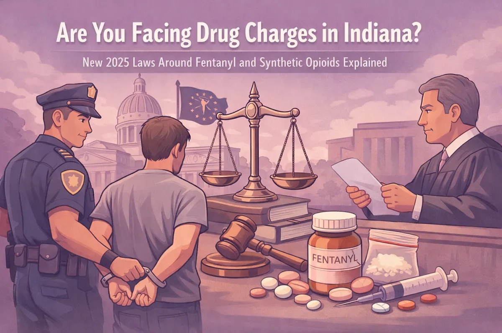
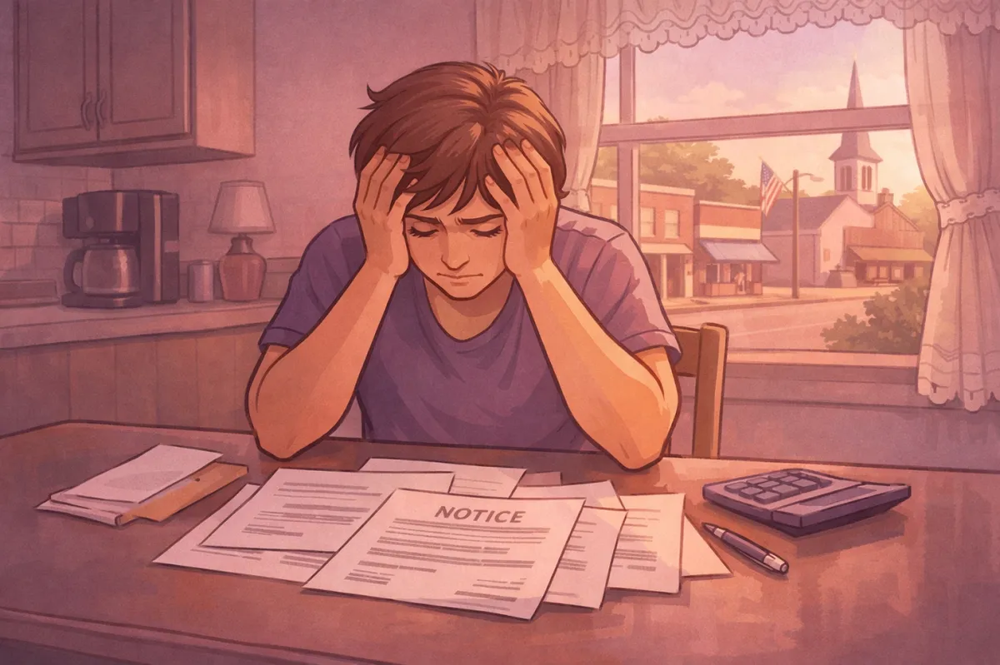

Are You Facing Drug Charges in Indiana? New 2025 Laws Around Fentanyl and Synthetic Opioids Explained

If you're reading this, chances are you or someone you care about is facing drug charges in Indiana. Maybe it happened in North Vernon, or out in Madison, or Seymour. Wherever it happened, you're probably scared and confused about what comes next.
That's completely understandable. Indiana recently made major changes to its drug laws in 2025, especially when it comes to fentanyl and synthetic opioids. These changes are serious, and they affect people right here in Jennings County and the surrounding area every day.
Here's what you need to know about the new laws, what they mean for you, and why having a local criminal defense lawyer who understands the Jennings County court system can make all the difference.
What Changed in 2025?
Indiana lawmakers passed sweeping legislation that completely overhauled how the state handles fentanyl and synthetic drug cases. The changes came in response to the ongoing opioid crisis, but they impact real people in small towns across Indiana.
The two biggest changes were to fentanyl penalties and the list of controlled substances that can now get you charged with a felony.
New Fentanyl Penalties: Weight Matters More Than Ever
Under the updated Indiana Code 35-48-4-1, dealing in fentanyl now carries penalties based on weight thresholds that are much lower than they used to be. Here's how it breaks down:
Less than one gram: Level 4 felony
At least one gram but less than five grams: Level 3 felony
Five grams or more: Level 2 felony
To put that in perspective, one gram is about the weight of a small paperclip. These lower weight requirements mean that what might have been a lower-level charge two years ago can now land you with a much more serious felony.
And here's the kicker: if there are what the law calls "enhancing circumstances," your charge can bump up one level. Enhancing circumstances include things like:
Having a firearm at the time of arrest
Being near a school or youth program center
Having prior drug convictions on your record
That means a Level 4 felony can become a Level 3, and so on. The penalties get steeper fast.

Dozens of New Drugs Added to Schedule I
House Enrolled Act 1056 added a massive list of synthetic drugs to Indiana's Schedule I controlled substances. This isn't just about fentanyl anymore. The new law specifically targets:
Synthetic opioids and fentanyl analogs
Synthetic hallucinogens (including MDMA-related compounds)
Synthetic cannabinoids like "Spice" or "K2"
Synthetic cathinones, sometimes called "bath salts"
Novel depressants like Etizolam and Flubromazolam
Here's what makes this particularly tricky: many of these substances existed in a legal gray area before 2025. People who thought they were using or possessing something that wasn't technically illegal can now face immediate arrest and felony charges.
The Indiana Board of Pharmacy also got new emergency powers to classify drugs quickly when new synthetics hit the streets. That means the list can expand at any time.
What This Means for People in Jennings County
If you live in North Vernon, Commiskey, Vernon, or anywhere else in Jennings County, these laws affect you the same way they affect everyone else in Indiana. But in smaller communities, there are some additional challenges.
Word travels fast in a small town. An arrest can impact your reputation, your job, and your family before you even step foot in court. That's why it's critical to act quickly and get representation that understands both the law and the community.
Another factor: rural areas have been hit especially hard by the opioid crisis. Prosecutors and judges are under pressure to come down hard on drug cases. That doesn't mean you don't have options, but it does mean you need someone in your corner who knows how to navigate the Jennings County court system and who will listen to your side of the story.
Aggravating and Mitigating Factors
The 2025 changes also introduced new factors that courts can consider when deciding your sentence.
Aggravating factors (things that can make your sentence worse):
Your immigration status if you're in the country unlawfully
Distributing controlled substances to three or more different people within 180 days
Mitigating factors (things that can reduce your sentence):
Seeking treatment for substance abuse in the year before your offense or between the offense and sentencing
That last point is important. The law now recognizes that getting help matters. If you're dealing with addiction, actively pursuing treatment can work in your favor. This is one area where a local attorney can help you understand your options and build a strategy that focuses on recovery, not just punishment.
A Charge Is Not a Conviction
This is the most important thing to understand: being charged with a drug offense is not the same as being convicted.
You have options. Even when things look bad, there are ways to fight the charges or seek alternatives that focus on treatment instead of jail time. Every case is different, and the specifics matter.
Maybe there was a problem with how the search was conducted. Maybe the weight of the substance is in question. Maybe you had no idea what was in your car or your home. Maybe you need treatment, not incarceration.
The key is to have someone who will sit down with you, listen to what you have to say, and give you honest options based on your situation.
Jennings County Adult Recovery Court: A Hopeful, Practical Option
If you're facing drug charges in North Vernon or anywhere in Jennings County, there may be a path forward that focuses on getting you stable instead of just punishing you.
The Jennings County Adult Recovery Court (often called Drug Court) is a specialized problem-solving court designed for adults who are struggling with addiction. It offers a structured, treatment-focused alternative to traditional prosecution for people who qualify.
In plain terms, this program is built around:
Judicial oversight (regular check-ins and accountability)
Treatment and recovery support (services aimed at long-term change)
Structure and supervision (clear rules, expectations, and monitoring)
The goal isn't to "go easy" on anyone. The goal is to reduce repeat offenses (recidivism) and help people get back on their feet with support and real tools, not just jail time.
If addiction is part of what's going on in your case, it's worth asking whether Adult Recovery Court could be a realistic option. A local attorney can help you understand what the program expects, whether you might qualify, and how it fits into your overall defense strategy.
Why Local Representation Matters
You could hire a lawyer from Indianapolis or Louisville. But here's the thing: Jennings County has its own prosecutors, its own judges, and its own way of doing things. A local criminal defense lawyer knows how the system works here.
I've handled a wide variety of complex legal matters in this area. I've been in the Jennings County courtroom countless times. I know the people involved, and I understand what strategies tend to work and what doesn't.
More importantly, I take the time to listen. When you're facing serious charges, you're not just a case number. You're a person with a story, a family, and a future worth fighting for.
My approach is simple: I sit down with you, hear what happened, and then we talk through your options together. Maybe that means fighting the charges head-on. Maybe it means negotiating for a treatment-focused outcome. Maybe it means working toward expungement down the road. Whatever the path, we figure it out together.
What You Should Do Right Now
If you're facing drug charges in Indiana, especially charges involving fentanyl or synthetic opioids, here's what you need to do:
Don't talk to law enforcement without a lawyer present. Anything you say can and will be used against you.
Write down everything you remember about what happened while it's fresh in your mind.
Reach out to a criminal defense lawyer who knows the local court system.
Ask questions. A good attorney will explain your options in plain language and help you understand what you're facing.
Don't wait. The sooner you have legal representation, the better your options tend to be.
Get Help Today
Drug charges are serious, especially under the new 2025 laws. But you don't have to face this alone.
If you're in Jennings County: whether that's North Vernon, Scipio, Hayden, Vernon, Commiskey, or anywhere in between: I'm here to help. I serve clients throughout the area and will travel for court in those surrounding cities like Columbus, Seymour (Brownstown), Versailles and Madison.
Contact me today to schedule a consultation. We'll talk about your case, your options, and what comes next. No legal jargon. No judgment. Just straight talk and a plan moving forward.
Remember: a charge isn't a conviction, and you have more options than you might think. Let's figure out the best path forward together.